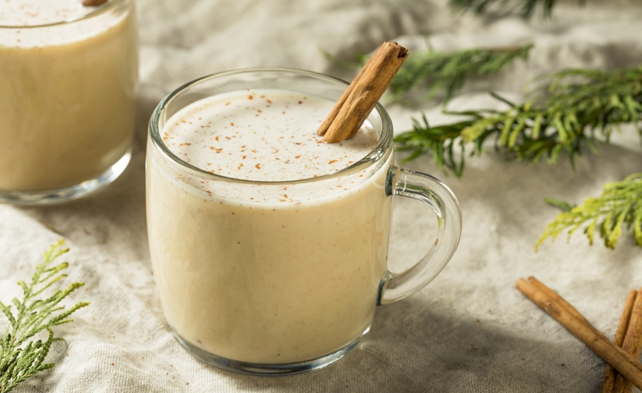

Nut-Chata Milk
~ raw, vegan, gluten-free ~
You say tomato, I say tomahto…you say Horchata, I say Nut-chata! I was aiming to replicate the famous Mexican drink horchata, but I missed it. None the less, this drink turned out yummy! Somebody invented horchata, right? So, what’s wrong with inventing Nut-chata?! hehe Horchata is a traditional Mexican beverage made with rice. It is flavored with lime and cinnamon and sweetened with sugar. Originally horchata was made with the chufa nut and sometimes melon or squash seeds.

The rice, nuts, or seeds are ground and mixed with water to make a milky looking drink. OK, so I didn’t use sugar or rice or lime… but I did use nuts, cinnamon, and natural sweeteners! I must get points for getting 1/2 of it right, don’t I?!
When my husband got home this evening, I hit him up right away to give it a taste test. He poured some into a measuring cup that was sitting on the counter. He drank it down. Yum! Licked his lips and poured himself a second measuring cup full. That my friend is always a good sign. I invite you to try this recipe and then let me know what you think.
Why I add sunflower lecithin.
Sunflower lecithin is made up of essential fatty acids and B vitamins. It helps to support healthy function of the brain, nervous system, and cell membranes. It also lubricates joints; helps break up cholesterol in the body. It comes in two forms, powder and liquid. I prefer raw sunflower lecithin. Setting aside all the nutritional benefits, it is a natural emulsifier that binds the fats from nuts with water creating a creamy consistency.
 Ingredients:
Ingredients:
Yields 3 1/4 cups
Preparation:
Soaking process:
- Place the nuts in a glass bowl or stainless steel bowl and cover with two cups of water.
- Do not use plastic bowls for soaking.
- Always make sure you add enough water to keep the nuts covered. They will swell over time as they plump up.
- Keep the bowl at room temperature and cover with a breathable cloth. If something comes up and you won’t be able to use the nuts within the 24 hours, store them in the fridge, changing the water 2x a day.
- If there are any floating nuts, toss them. That can be an indicator of them being rancid. Better to be safe than sorry. Think of them as, “floaters are bloaters.”
- Add 1/4 tsp of Himalayan pink salt; this helps activate enzymes that de-activate the enzyme inhibitors.
- Soak for 8-24 hours.
- This is great not only for reducing phytic acid but also softens the nuts, making them blend easier and smoother.
- Skipping the soaking process will result in less creamy milk.
- If you already have soaked/dehydrated nuts in your freezer or fridge, I suggest soaking them again for the purpose of just softening them.
Blending process:
- Once the nuts are done soaking, drain, rinse, and discard the soak water.
- Do not reuse the soak water for the milk-making process. This is full of the phytic acid/enzyme inhibitors that were drawn out during the soaking process.
- Place the almonds in a high-powered blender along with the freshwater.
- Start the blender on low and work up to high, then blend for 30-60 seconds or until the nuts have pulverized.
- A high-powered blender will accomplish the job much easier.
- If you don’t own one such as a Vitamix or Blendtec, you might have to blend for 1-2 minutes.
- Do not sweeten or add flavorings until you have strained the milk.
Straining the milk:
- Turn the bag inside out and keep seams on the outside for easier straining, cleaning, and faster drying.
- Place the nut milk bag in the center of a large bowl.
- Instead of a nut bag, you can drape cheesecloth over the edges of the bowl and pour the milk through it. I find this process messier, and it doesn’t seem to filter it as well.
- Desperate? Don’t have a nut bag or nut milk while you are vacationing in France? Take off one of those silky-French knee-high nylons, wash it, and pour the milk through it. I am here, always thinking for you. :)
- With one hand holding the nut bag, pour the milk into the bag. Lift the bag, and the milk will start to flow through the mesh holes in the bag. The finer the mesh, the more filtered the milk will be.
- Gather the nut bag (or cheesecloth) around the almond meal and twist close.
- Squeeze the nut pulp with your hand to extract as much milk as possible.
- Do not toss the nut pulp. Freeze and dehydrate it, which can be used in other recipes such as smoothies, crusts, cookies, crackers, cakes, or raw breads.
Flavoring:
- Add the strained milk back into a rinsed blender carafe, along with the sweetener, raisins, cinnamon, lucuma, and lecithin. Blend another 30 seconds or longer if needed.
- If you wish to enjoy this drink warm, blend longer, placing your hand on the blender carafe to feel for warmth.
- Strain back through the nut bag if you wish. I preferred to strain mine one more time.
- Check out that froth!
Thickeners and Emulsifiers: (substitution ideas)
- Lecithin – thickener and emulsifier
- Add up to 1 Tbsp per every 2-3 cups of water used.
- I highly recommend sunflower or soy lecithin.
- Coconut butter/manna
- Add up to 1 Tbsp per every 2-3 cups of water used.
- Do not use coconut oil. It hardens when chilled and may create small gritty pieces in the milk
- Nut butter:
- Add up to 1 Tbsp per every 2-3 cups of water used
- If using store-bought, watch for added ingredients such as salt.
Storing and expiration:
- Store the milk in an airtight glass container such as a mason jar.
- Always label the contents and the date that it was made.
- If for some reason separation still does occur, just shake the jar before serving, and the milk will come back together.
- Fridge – The milk can last anywhere from 3-5 days in the fridge.
- If the nut milk prematurely sours it may be from an unclean blender, nut milk bag, or poor quality nuts.
- Freezer – There are several ways to store nut milk in the freezer. Freeze for up to 3 months.
- Pour the milk into ice cubes trays and freeze. This is great for plopping into smoothies.
- Freeze in 1 1/2 pint freezer-safe jars.
- It is important that you only freeze glass jars that are made for freezing. I have tested this, and sure enough, I have had jars crack on me, resulting in throwing everything in the trash. Sad day.
- You can use smaller jars for better portion control if you don’t plan on using a full 1 1/2 pints worth.
- Pay attention to the “maximum freeze line” indicated on the jar. If you don’t see that, then it’s another indicator that the jar isn’t safe to place in the freezer.
Nut bag maintenance:
- It is important to keep the nut milk bag clean!
- Wash with organic, scent-free soap, such Dr. Bronners. Do not use laundry soap. (always refer to the manufacturers cleaning method as well)
- Rinse well air dry. Ideally in the direct sun to receive free sterilizing from the warm rays. Nylon nut milk bags should not be placed in the sun as the ultraviolet rays can damage the nylon.
- Do not hang the bags outside on the clothesline to dry. We don’t want an air-raid of bird poop coming down on it.
- Proper bag storage –
- I like to roll mine up and store them in a glass jar. This will help keep it clean, protect it from dust, and accidental hole damage. A holy bag has no purpose when it comes to nut milk making.
- Also, if you use nut bags for multiple reasons, it would be a good idea to store them in separate jars, labeling them for their purpose, such as; nut milks, juicing, sprouting.
© AmieSue.com